同一種黏土，做 UU 試驗，量到的摩擦角是零；做 CU 試驗，量到 \(\phi_{cu}\)；做 CD 試驗，又量到 \(\phi'\)。同一種土，三個角度，到底哪一個才是真的？
| 試驗 | UU | CU | CD |
|---|---|---|---|
| 量到的角度 | \(\phi_u=0\) | \(\phi_{cu}\) | \(\phi'\) |
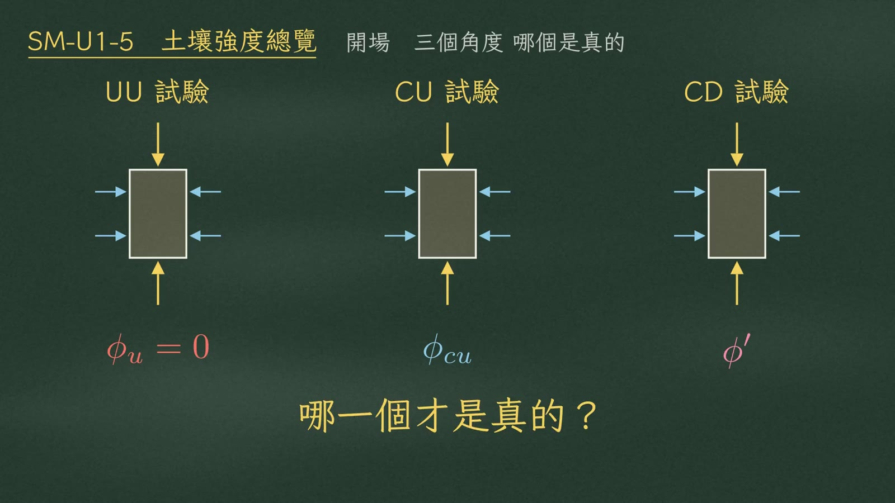
答案是：只有 \(\phi'\) 是土的性質，其他都是試驗方法的產物。這個單元的底層邏輯就一句話：一組真參數，無限多組表觀角度。接下來用一張又一張莫爾圓，把這句話拆開來看。
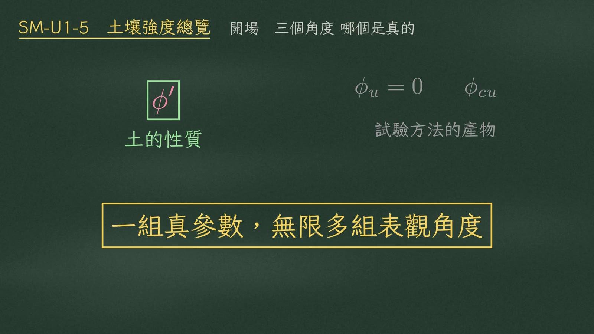
先看微觀。土是一顆一顆的顆粒，孔隙裡充滿水。水是各向同性的，只能承壓，不能承受剪力。剪力只能靠顆粒和顆粒的接觸點傳遞，接觸點上的正向力越大，摩擦阻力就越大。
黑板（0:53）：接觸點的正向力 ⇒ 摩擦阻力 ⇒ 剪力的唯一來源。
所以真正決定強度的，是顆粒骨架承擔的應力，叫有效應力：
$$\sigma'=\sigma-u$$破壞準則只有一條：
$$\tau_f=c'+\sigma'\tan\phi'$$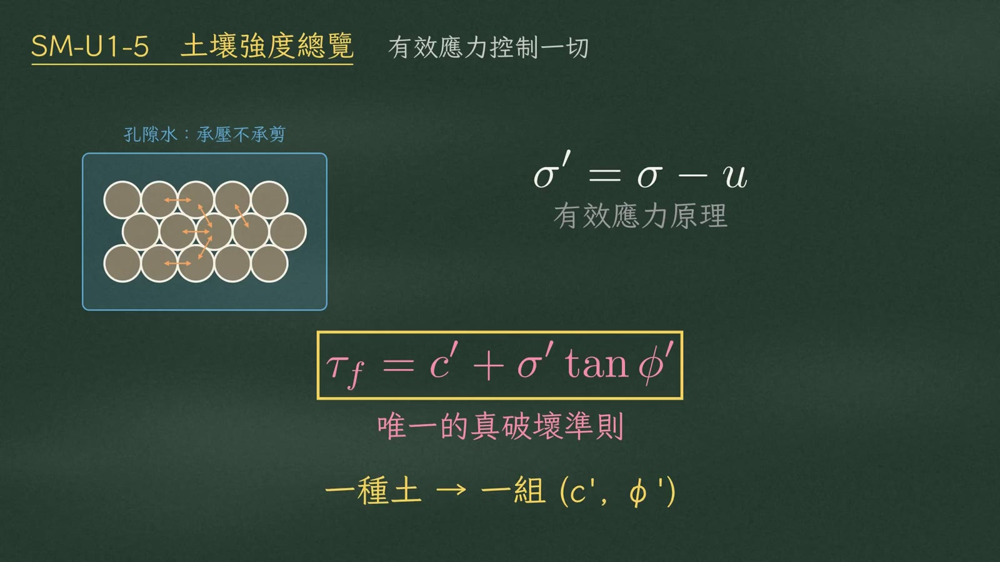
再看巨觀。實線是有效應力包絡線，這才是土的性質。兩條虛線，一條是 CU 的總應力包絡線，一條是 UU 的水平線。三條線畫的是同一種土，虛線只是試驗條件的產物。
| 黑板線型 | 代表 | 身分 |
|---|---|---|
| 粉紅實線 | 有效應力包絡線（截距 \(c'\)、角 \(\phi'\)） | 土的性質 |
| 藍虛線 | \(\phi_{cu}\)（CU 總應力） | 試驗條件的產物 |
| 紅虛水平線 | \(\phi_u=0\)（UU 總應力） | 試驗條件的產物 |
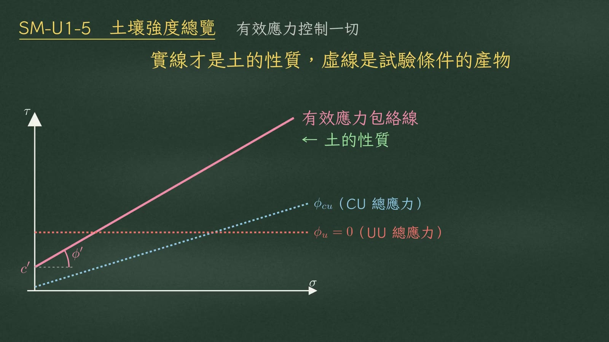
那 \(u\) 怎麼變？由兩個閥門決定：壓密階段排不排水，剪切階段排不排水。
| 試驗 | ① 壓密 | ② 剪切 | 孔隙水壓 \(u\) | 參數 | 對應現場 |
|---|---|---|---|---|---|
| UU | ✕ 關 | ✕ 關 | \(\Delta u=\Delta\sigma_3\)，有效應力沒變 | \(\phi_u=0\)，\(S_u=R\) | 快速加載、開挖後立即穩定 |
| CU | → 開 | ✕ 關 | 壓密時消散歸零；剪切時 \(u_f\) 被逼出來、量得到 | \(\phi_{cu}\) 與 \(\phi'\) | 既有結構上再快速加載 |
| CD | → 開 | → 開 | \(u=0\)，總應力＝有效應力 | 直接量到 \(c'\)、\(\phi'\) | 長期穩定、砂土、緩慢加載 |
UU 兩個閥門都關，圍壓全由水承受，\(\Delta u=\Delta\sigma_3\)，有效應力沒變，量到 \(\phi_u=0\)、\(S_u\) 等於半徑。CU 先開閥壓密，讓 \(u\) 消散歸零；再關閥剪切，孔壓 \(u_f\) 被逼出來，而且量得到，所以量到 \(\phi_{cu}\) 和 \(\phi'\) 兩組參數。CD 兩個閥門都開，\(u\) 始終是零，總應力就等於有效應力，直接量到 \(c'\) 和 \(\phi'\)。
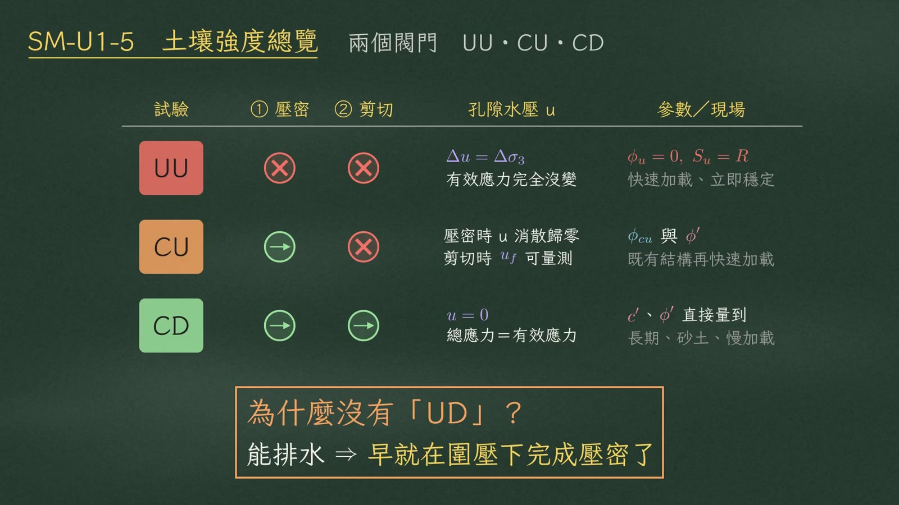
第一步加圍壓 \(\sigma_3\)，各向同性，莫爾圓縮成橫軸上的一個點。第二步用活塞加軸差應力 \(\Delta\sigma_d\)，圓往右長大，碰到包絡線就破壞。
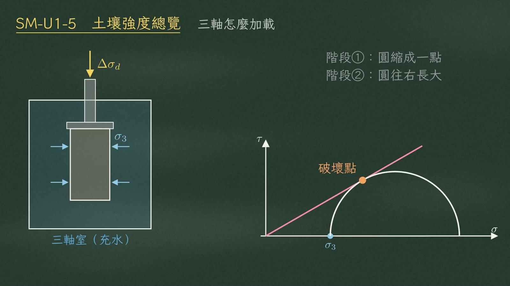
圓心 \(C\) 是兩者平均，半徑 \(R\) 是 \(\Delta\sigma_d\) 的一半。
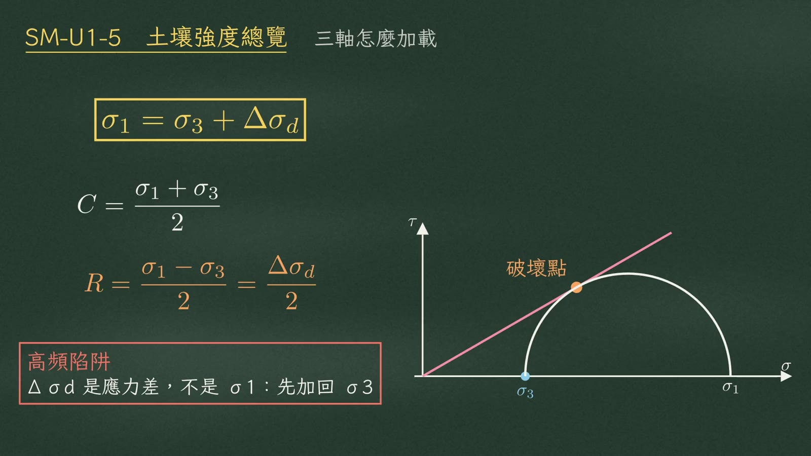
破壞的那一刻，莫爾圓剛好和包絡線相切，切點 \(T\) 就是破壞面上的應力。圓心連到切點的半徑和包絡線垂直，這個直角三角形，就生出三條破壞條件式。
公式一，萬能式：
$$\sigma_1'=\sigma_3'K_p+2c'\sqrt{K_p},\qquad K_p=\tan^2\!\left(45^\circ+\frac{\phi'}{2}\right)$$公式二，幾何關係式——從切點的垂足直接看出來：
$$R=C\sin\phi'+c'\cos\phi'$$公式三，正常壓密黏土專用：\(c'=0\)，包絡線過原點：
$$\sin\phi'=\frac{R}{C}=\frac{\sigma_1'-\sigma_3'}{\sigma_1'+\sigma_3'}\qquad(c'=0)$$另外，切點和圓心的連線，與橫軸的夾角：
$$2\theta=90^\circ+\phi'$$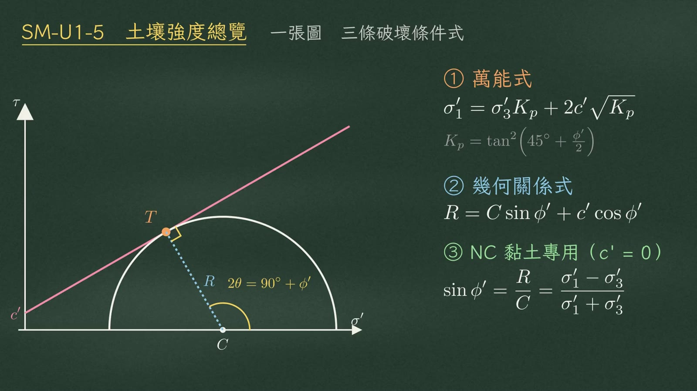
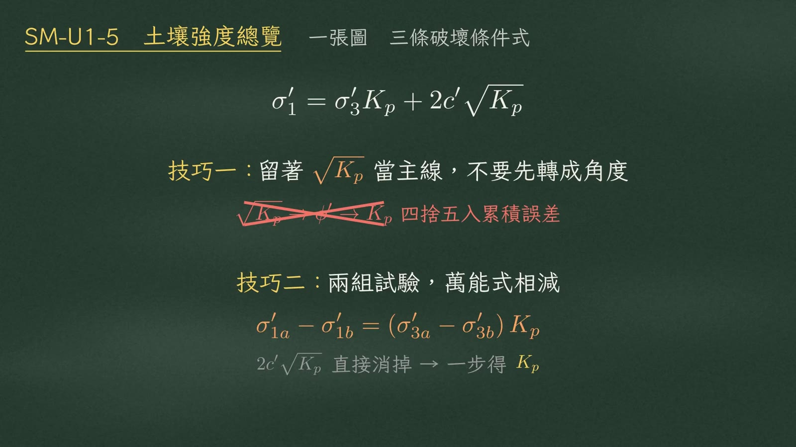
接下來是解題的三問決策：① 哪種試驗？→ ② NC 還是 OC？→ ③ 總應力還是有效應力？
第一問：這是哪一種試驗？它決定 \(u\) 怎麼處理。如果是 CD，\(u=0\)，畫一個圓直接套公式。
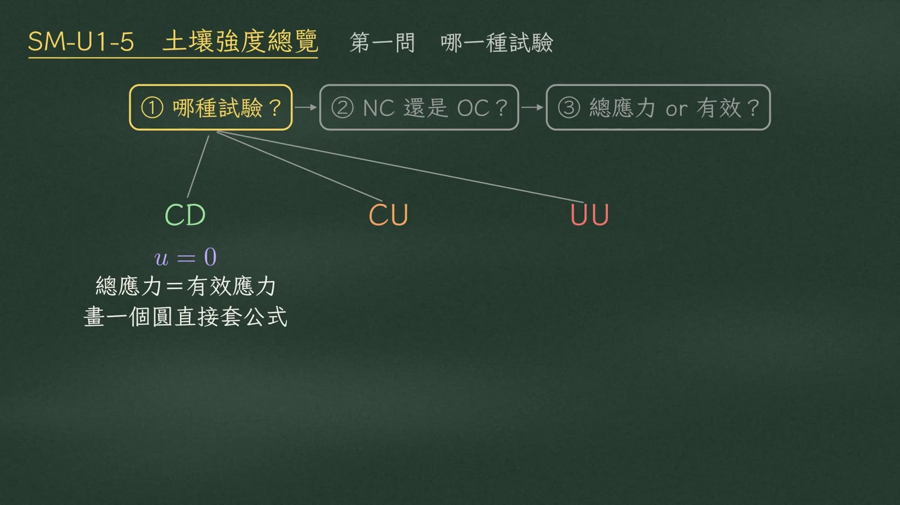
如果是 CU，\(\sigma_1\) 和 \(\sigma_3\) 扣掉同一個 \(u_f\)，所以整個圓往左平移 \(u_f\)，半徑完全不變：
$$\sigma_1'=\sigma_1-u_f,\qquad \sigma_3'=\sigma_3-u_f$$先算 \(u_f\)，再兩邊同扣，就從總應力世界跳到有效應力世界。
黑板配色：粉紅＝有效應力圓、藍＝總應力圓。
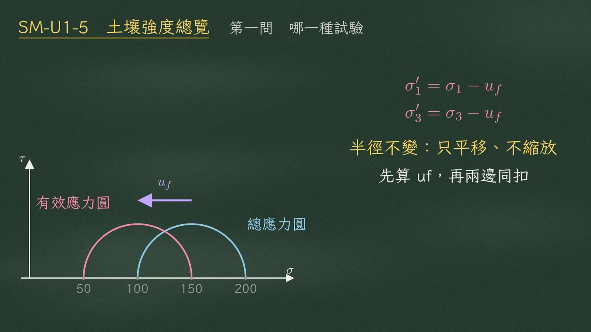
平移之後斜率就不同了。正常壓密黏土 \(u_f\) 是正的，有效圓靠近原點，切線比較陡，\(\phi'>\phi_{cu}\)。
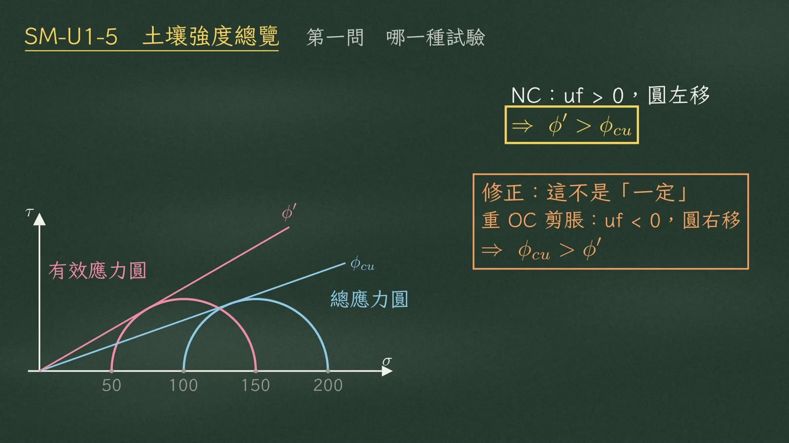
孔壓從哪裡來？Skempton 孔壓參數：
$$\Delta u=B\left[\Delta\sigma_3+A(\Delta\sigma_1-\Delta\sigma_3)\right]$$飽和土 \(B=1\)；\(A\) 反映剪脹傾向，正常壓密黏土大約 \(0.5\sim1\)，重過壓密可以是負的。
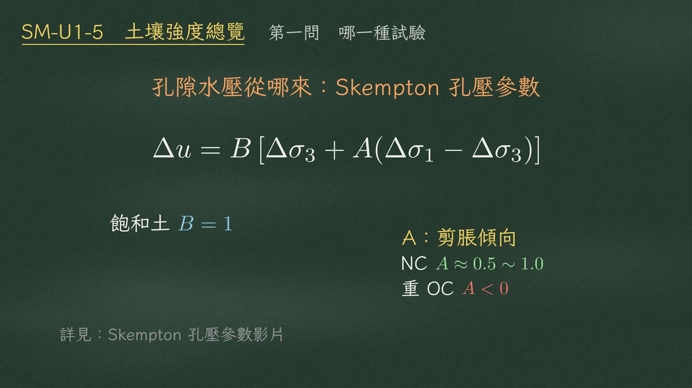
如果是 UU，圍壓增量全被孔隙水吃掉，有效應力紋風不動，只有唯一一個有效應力圓。所以總應力圓位置不同，大小完全一樣，包絡線是一條水平線，高度就是 \(S_u\)。
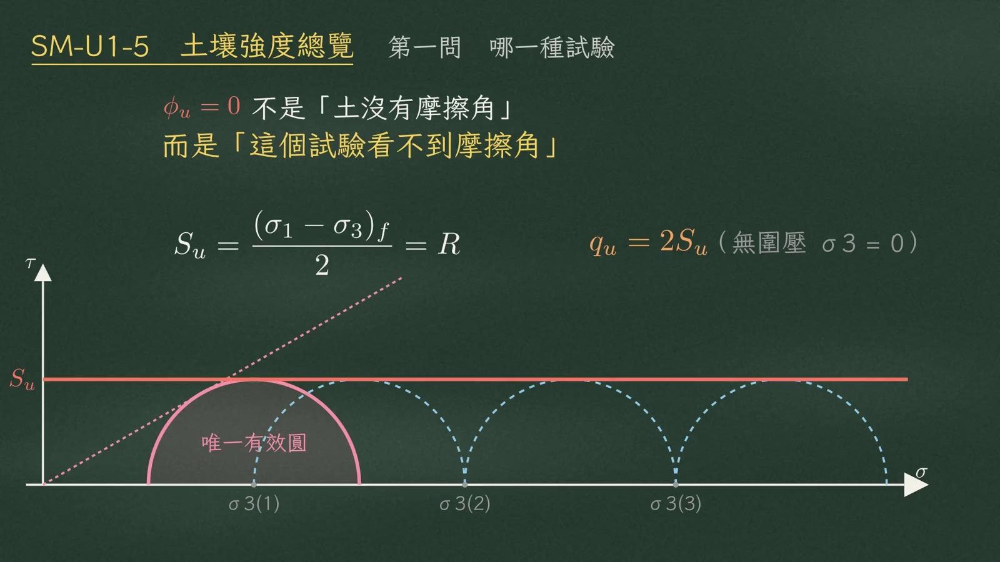
第二問：正常壓密 NC，還是過壓密 OC？它決定 \(c'\) 是不是零。
| NC | OC | |
|---|---|---|
| \(c'\) | \(c'=0\)，包絡線過原點 | \(c'\ne0\)，包絡線有截距 |
| 破壞圓 | 以原點為位似中心，互為相似形 | 不相似 |
| 算法 | \(\sigma_1'=\sigma_3'K_p\)；圍壓 ×2 ⇒ \(\Delta\sigma_d\) ×2，按比例秒算 | 比例法失效；回到萬能式，兩組聯立相減解 \(K_p\) |
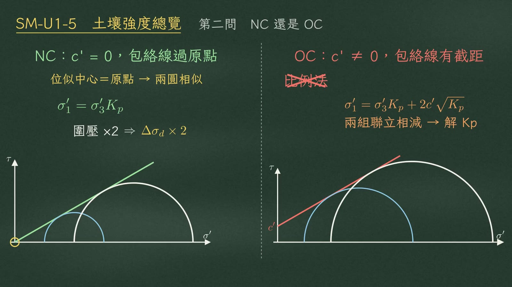
NC 的捷徑還有一條：現地不排水強度比值固定。
$$\frac{S_u}{\sigma_{v0}'}=\frac{\sin\phi'}{1+\sin\phi'}$$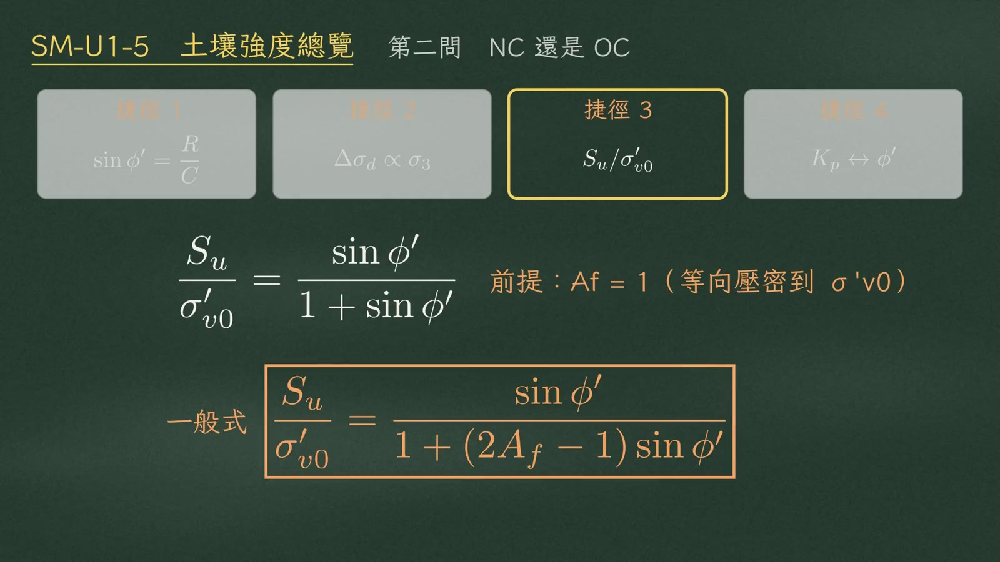
第三問：要總應力，還是有效應力參數？
為什麼不能代 \(\phi_{cu}\)？因為顆粒是沿著有效應力決定的面滑動，同一個試體的破壞面只有一個角度。題目只給 \(\phi_{cu}\)，就先透過 \(u_f\) 換算出 \(\phi'\) 再代入。
\(\phi'\) 越大越陡：
| \(\phi'\) | \(35^\circ\) | \(20^\circ\) |
|---|---|---|
| \(\theta\) | \(62.5^\circ\) | \(55^\circ\) |
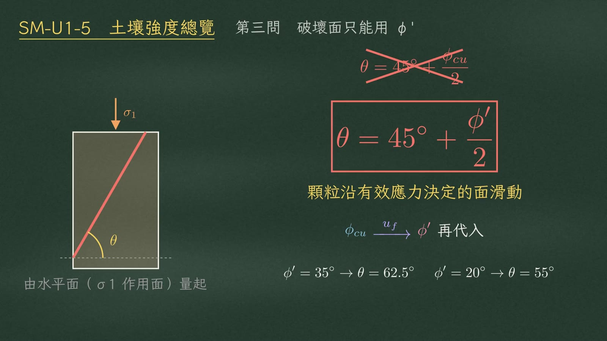
用應力路徑看得更清楚。橫軸 \(p\) 是圓心，縱軸 \(q\) 是半徑：
$$p=\frac{\sigma_1+\sigma_3}{2},\qquad q=\frac{\sigma_1-\sigma_3}{2}$$CD 路徑是一條 45° 斜線；CU 的有效應力路徑因為孔壓往左彎。走法不同，有效應力的終點卻都落在同一條有效 \(K_f\) 線上。
黑板配色：綠＝CD 排水路徑、藍＝CU 總應力路徑、粉紅＝CU 有效應力路徑。
所以 \(\phi'\) 是土的性質；\(\phi_{cu}\) 只是總應力終點的連線，加載方式一改，\(u_f\) 就變，斜率跟著變。
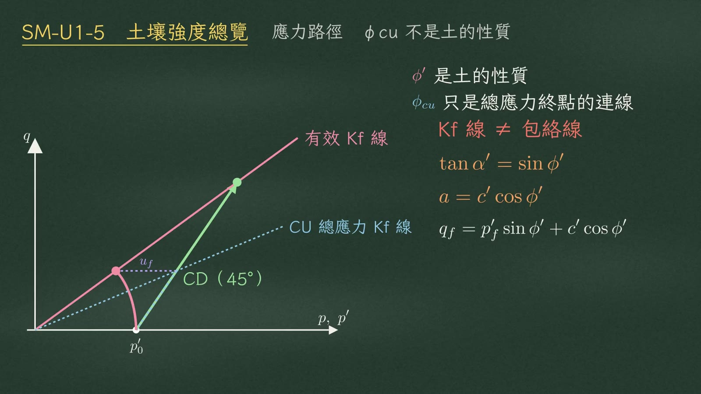
密砂的應力應變曲線先衝到尖峰再掉回來；鬆砂一路慢慢爬升。大變形後，兩者收斂到臨界狀態摩擦角 \(\phi_{cv}\)。體積上，密砂剪脹，鬆砂壓縮。
密砂要剪動，顆粒必須互相翻越，這份額外的功就是尖峰摩擦角 \(\phi_p\)。
$$\phi_p=\phi_{cv}+\text{剪脹貢獻}$$| 重點 | 內容 |
|---|---|
| 材料常數 | \(\phi_{cv}\) 才是材料常數 |
| 圍壓效應 | 圍壓越高，剪脹越被抑制，\(\phi_p\) 越低 |
| 對照黏土 | 密砂像 OC，鬆砂像 NC |
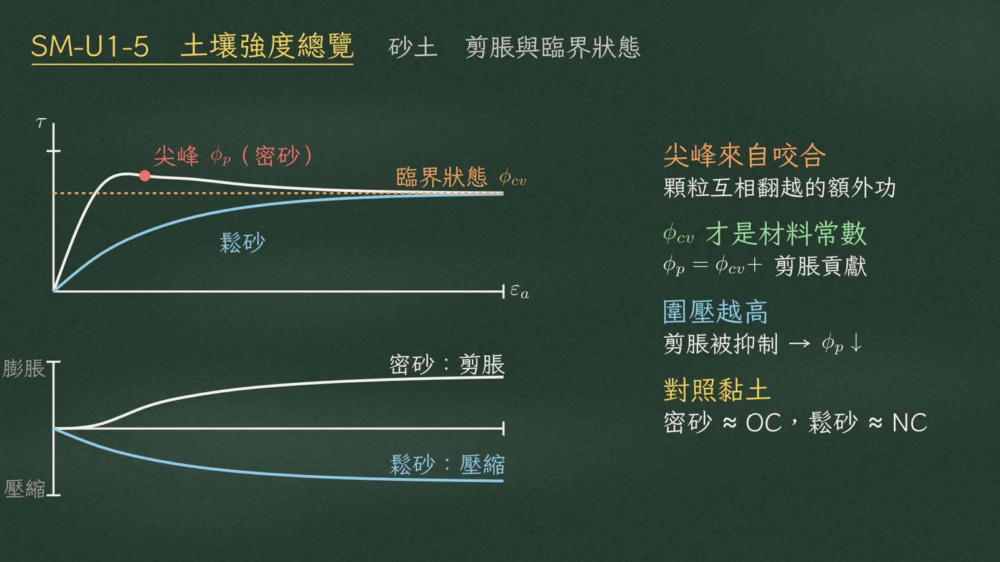
直剪試驗上下兩個盒子錯動，破壞面被強制固定在水平面上，直接量到 \(\tau\) 和 \(\sigma_n\) 的點，連起來就是包絡線：
$$\tau_f=c'+\sigma_n'\tan\phi'$$快，但排水條件和應力狀態都不完整——直剪量不到孔隙水壓，也不知道主應力。
| 直剪 | 三軸 | |
|---|---|---|
| 破壞面 | 強制水平 | 自然弱面 |
| 量孔隙水壓 | 不能 | 可以 |
| 應力狀態 | 只知 \(\sigma_n\)、\(\tau\) | \(\sigma_1\)、\(\sigma_3\) 已知 |
| 莫爾圓 | 包絡線上的點 | 完整的圓 |
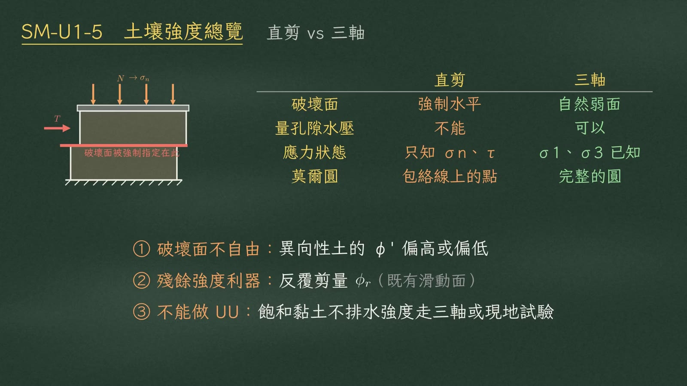
| 陷阱 | 錯誤 | 正確 |
|---|---|---|
| 陷阱一 | ✕ \(\sigma_1=\Delta\sigma_d\)（軸差應力當大主應力） | \(\sigma_1=\sigma_3+\Delta\sigma_d\) |
| 陷阱二 | ✕ \(\theta=45^\circ+\phi_{cu}/2\) | \(\theta=45^\circ+\phi'/2\) |
| 陷阱三 | ✕ OC 用比例法 | 有截距 \(c'\)，圓就不相似 → 萬能式聯立 |
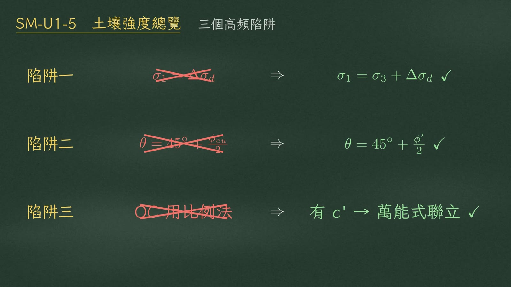
正常壓密黏土 CD 試驗，圍壓 \(\sigma_3'=100\) kPa，破壞時軸差應力 \((\Delta\sigma_d)_f=200\)。先加回來：
$$\sigma_1'=100+200=300,\qquad C=200,\quad R=100$$ $$\sin\phi'=\frac{100}{200}=0.5\ \Rightarrow\ \boxed{\phi'=30^\circ,\quad K_p=3}$$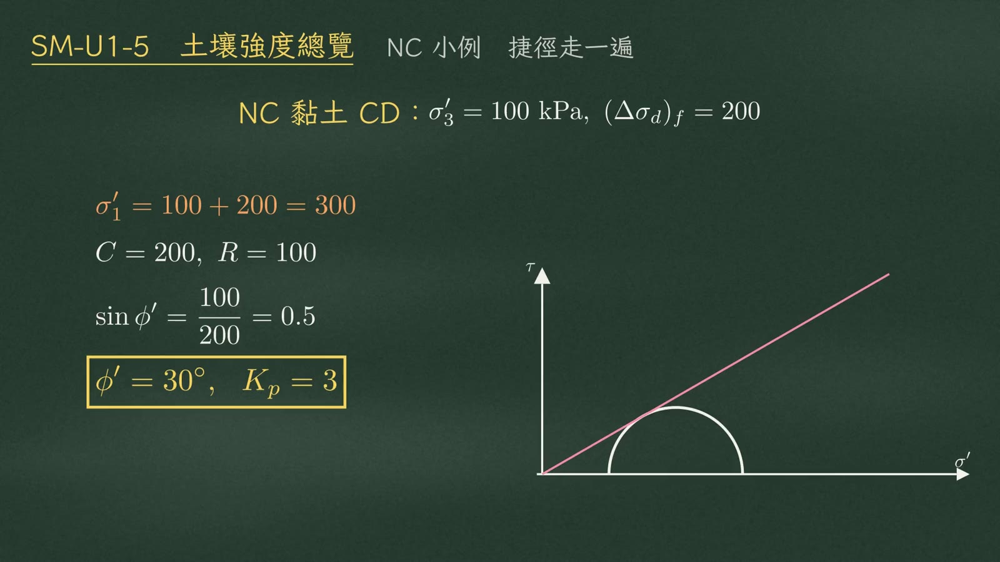
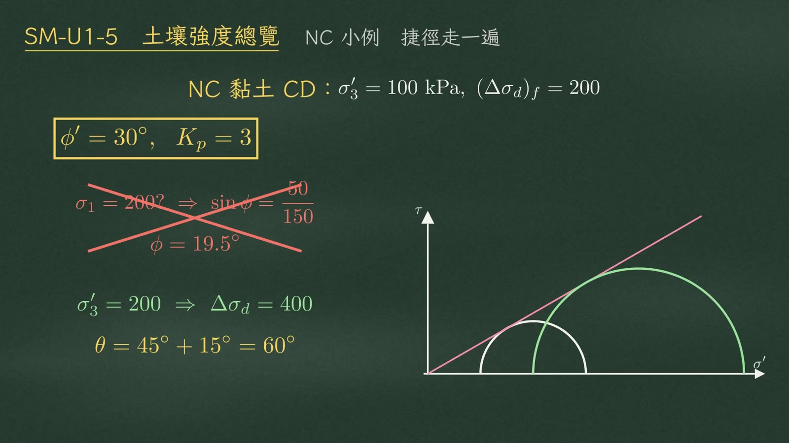
練題順序：
| 順序 | 題號 | 重點 |
|---|---|---|
| 1 | SM-2024-1 | 莫爾圓幾何 |
| 2 | SM-2018-2 | CU 雙參數、比例法 |
| 3 | SM-2010-1 | UU 與 \(S_u\) |
| 4 | SM-2008-2 | Skempton 參數 |
| 5 | SM-2013-3 | 應力路徑 |